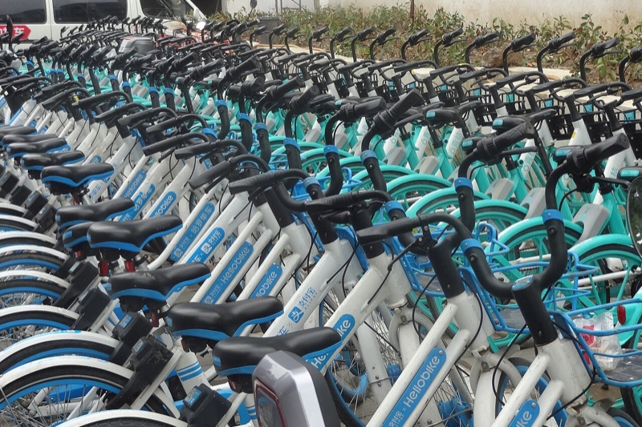
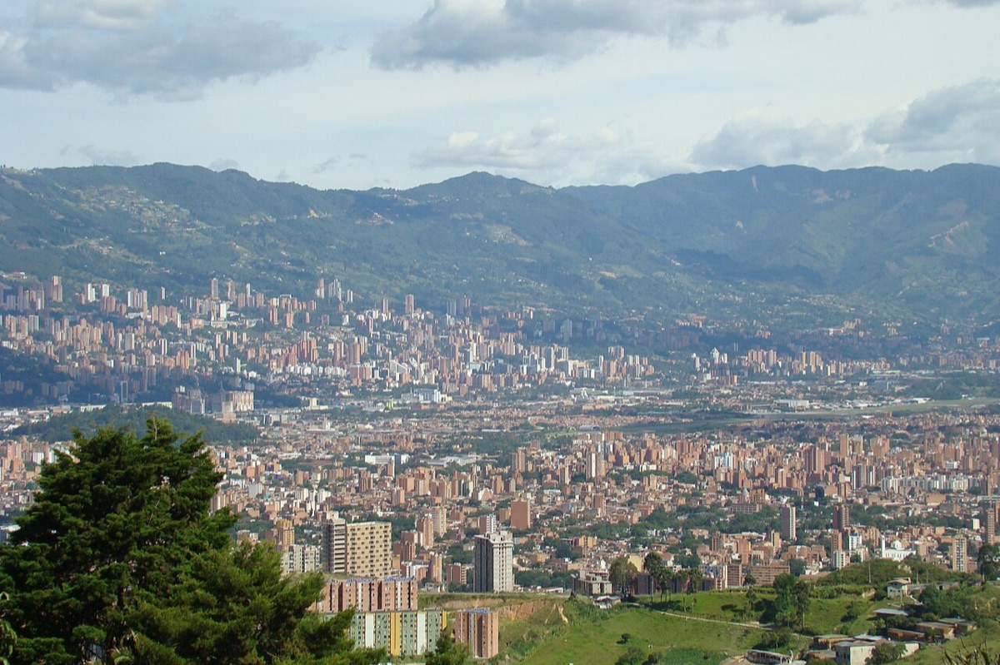
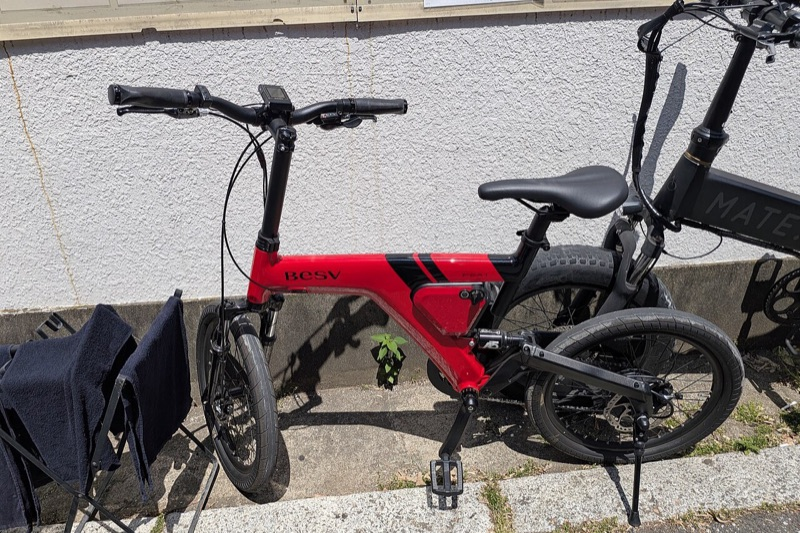
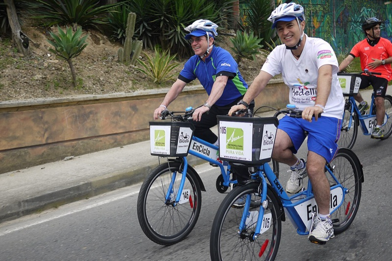
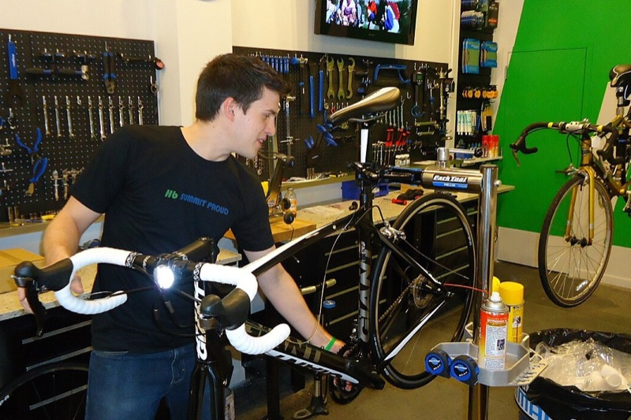

Alquiler de bicicletas
Tenemos bicicletas urbanas y de montaña, revisadas antes de cada salida. Todo alquiler incluye casco y candado, para que solo te preocupes por disfrutar el camino.
Ver tarifas de alquiler¡Bienvenido a Rueda Libre! Alquilamos bicicletas y organizamos recorridos guiados para que descubras Medellín a tu ritmo: sus barrios, sus parques y sus montañas, sobre dos ruedas.
Reservar ahora
Somos un emprendimiento de Medellín que nació con una idea sencilla: que conocer la ciudad en bicicleta sea fácil, seguro y para todos. Alquilamos bicicletas por horas o por días y organizamos recorridos guiados por los barrios, parques y miradores más bonitos del valle. Si quieres visitarnos, mira cómo encontrarnos al final de esta página.
Todo lo que necesitas para rodar por la ciudad, en un solo lugar.

Tenemos bicicletas urbanas y de montaña, revisadas antes de cada salida. Todo alquiler incluye casco y candado, para que solo te preocupes por disfrutar el camino.
Ver tarifas de alquiler
Sube las lomas de Medellín sin quedarte sin aire. Nuestras bicicletas eléctricas te ayudan con cada pedalazo y son ideales para Las Palmas o Santa Elena.
Ver tarifas de eléctricas
Salimos en grupos pequeños con guías locales que conocen la historia de cada rincón. Hay rutas por El Poblado, Laureles, el centro y Las Palmas, pensadas para principiantes y para quienes ya tienen piernas entrenadas.
Ver recorridos
Si traes tu propia bicicleta, te ayudamos con ajustes de frenos, cambios, presión de llantas y lubricación de cadena. Es un servicio rápido mientras esperas.
Visítanos en la sede